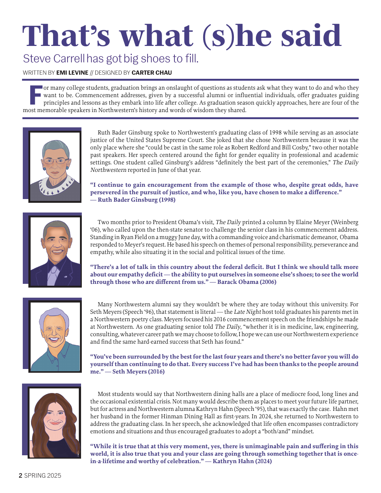

That's what (s)he said
Magazine layout and illustration design for a feature on memorable Northwestern commencement speakers. Written by Emi Levine; designed by Carter Chau.
View full design ↗Graphic design, data visualization and research-driven storytelling.

Magazine layout and illustration design for a feature on memorable Northwestern commencement speakers. Written by Emi Levine; designed by Carter Chau.
View full design ↗
A political data visualization project examining changes in campaign practices between the 2000 and 2008 presidential elections.
Explore project →